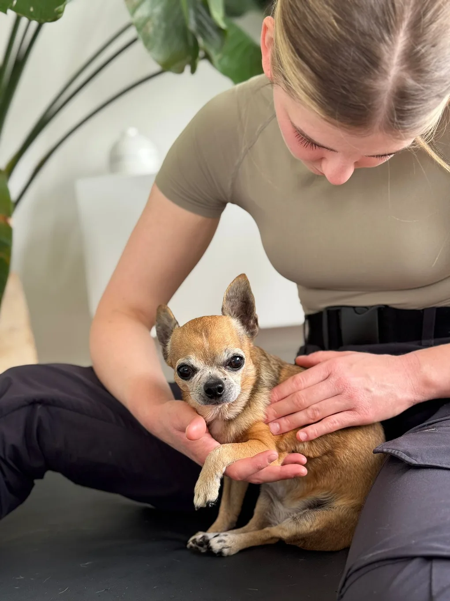

Wohlbefinden
Schmerzlinderung & Entspannung
Für mehr Leichtigkeit im Alltag
Durch gezielte Massagen und manuelle Therapie werden Verspannungen gelöst, die Durchblutung gefördert und Schmerzkreisläufe sanft durchbrochen.